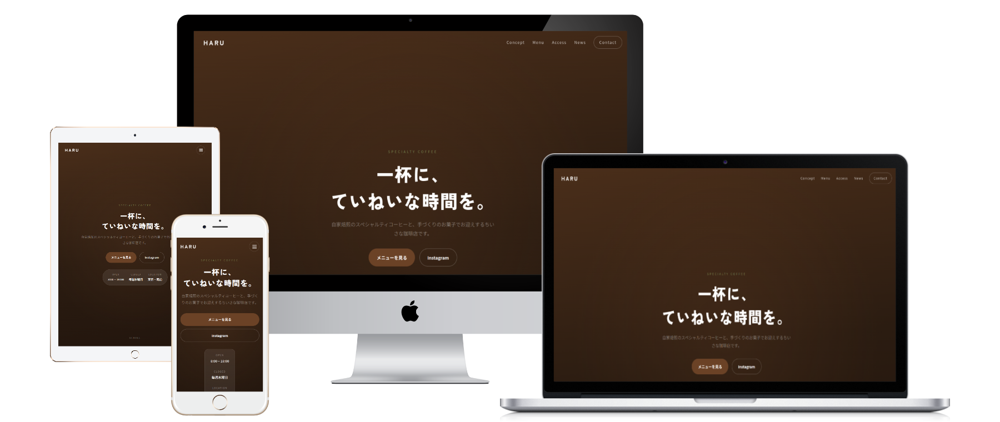

Sample Cases
業種別の参考サイト
会社案内、店舗紹介、採用、問い合わせ導線など、事業内容に合わせて必要なページ構成を整理します。

製造業コーポレートサイト
会社情報、設備紹介、品質管理、採用情報、問い合わせ導線まで整理したサイト構成。
向いている用途: 会社案内 / 採用強化 / 技術紹介 / 問い合わせ獲得

ローカル店舗サイト
店舗の雰囲気、メニュー、営業時間、お知らせ、アクセス情報をわかりやすくまとめる構成。
向いている用途: 店舗紹介 / メニュー掲載 / 来店導線 / 最新情報の発信

自社サイトの相談をする
業種、ページ数、掲載したい内容に合わせて個別に構成を提案します。